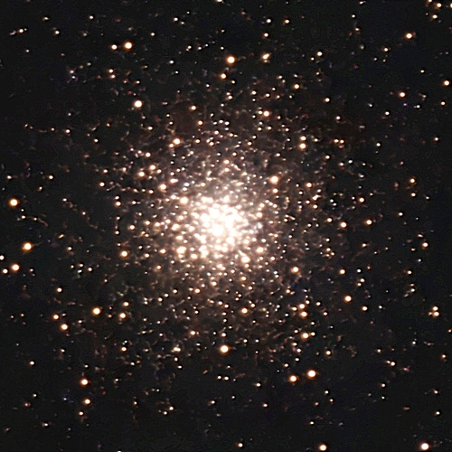
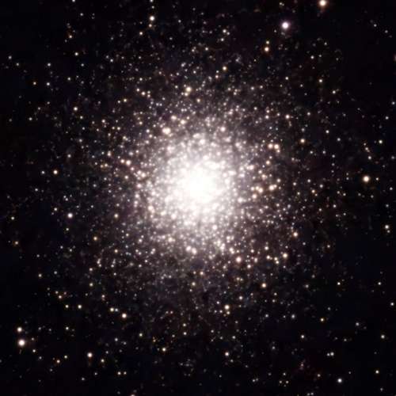
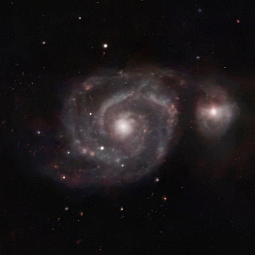
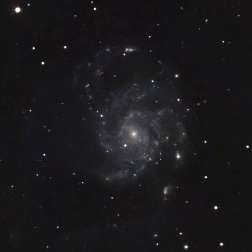
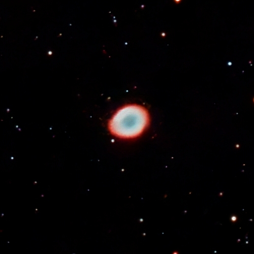

Коллекции:
Солнечная система
Звезды
Звездные скопления
Экзопланеты
Звездные остатки
Бурые карлики
Туманности
Галактики
Астрофото из КГО
Имя,
Угловые размеры,
Расстояние,
Звездная величина.

Мессье 10
20′
4.4
11.4 млрд
6.5

Мессье 13
20′
7.4
11.65 млрд
5.8

Водоворот
11′.2
7220
400 млн
8.4

Вертушка
28′.8
6644
~10 млрд
7.9

Туманность Кольцо
2′.5
0.79
7000
8.8
Ссылки
Каталог Мессье
Планетарная туманность
,
Список планетарных туманностей
Шаровое звёздное скопление
,
Список шаровых звёздных скоплений
Рассеянное звёздное скопление
,
Список рассеянных звёздных скоплений
Каталоги и списки
Каталоги шаровых звёздных скоплений:
GGCs database
,
Globular Clusters in the Milky Way
: VII/202
MWSC - Milky Way Star Clusters Catalog
,
Milky Way global survey of star clusters. II. : J/A+A/558/A53
. We present a list of 3006 Milky Way Stellar Clusters (MWSC), found in the 2MAst (2MASS with Astrometry) catalogue.
A Multi-band Catalog of 10978 Star Clusters, Associations, and Candidates in the Milky Way
. About 3200 objects have measured parameters in the literature. A fundamental contribution of the present study is to present an additional ≈7700 objects for the first analyses of nature, photometry, spectroscopy and structure.
Improving the open cluster census. II. An all-sky cluster catalogue with Gaia DR3
The Unified Cluster Catalogue: towards a comprehensive and homogeneous data base of stellar clusters
A Galactic globular clusters database
(157 objects?)
Catalog of Globular Cluster Systems in Galaxies
,
A Catalog of Globular Cluster Systems: What Determines the Size of a Galaxy's Globular Cluster Population?